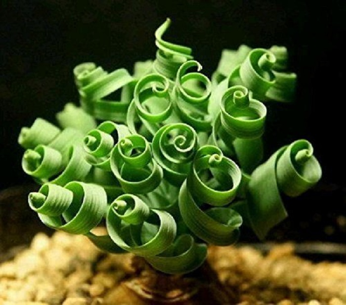

| Молочай «Голова медузы» (Euphorbia сaput-medusae) | Молочай тирукалли (Euphorbia tirucalli) | Хавортия Купера (Haworthia сooperi) | Штопорная трава (Corkscrew grass) | Редкая горечавка урнула (Gentiana urnula) |
|---|---|---|---|---|
|
|
|
 | |
| Ядовитое растение со змеинообразными ответвлениями, которые расползаются в разные стороны | Многолетнее растение с безлистными стеблями получило еще одно название - «карандашное дерево» | Комнатное растение с толстыми, мясистыми листьями, которые запасаются водой на долгий период жары и засухи | Листья необычного растения сотворила матушка природа | Тибетская красавица с листьями ромбовидной формы |
| Ядовитое | Не съедобное | Вызывает привыкание | Не съедобное | |